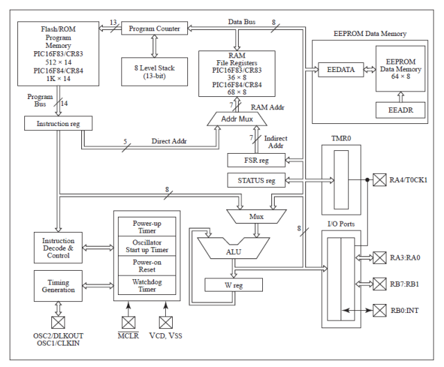
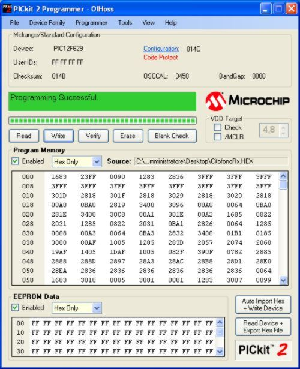
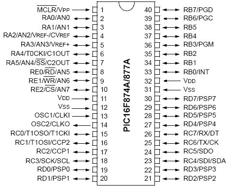
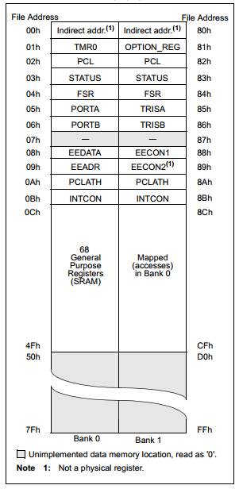
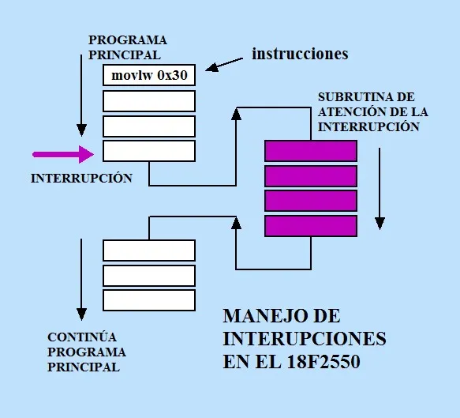
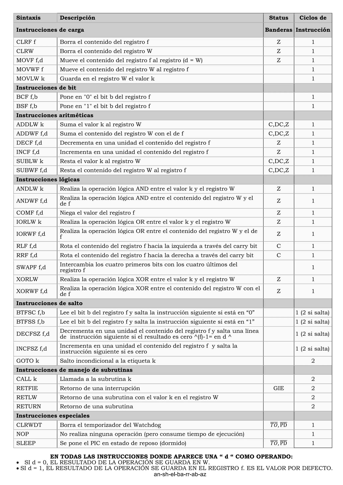
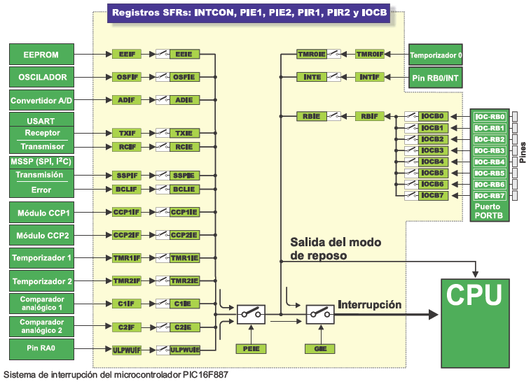
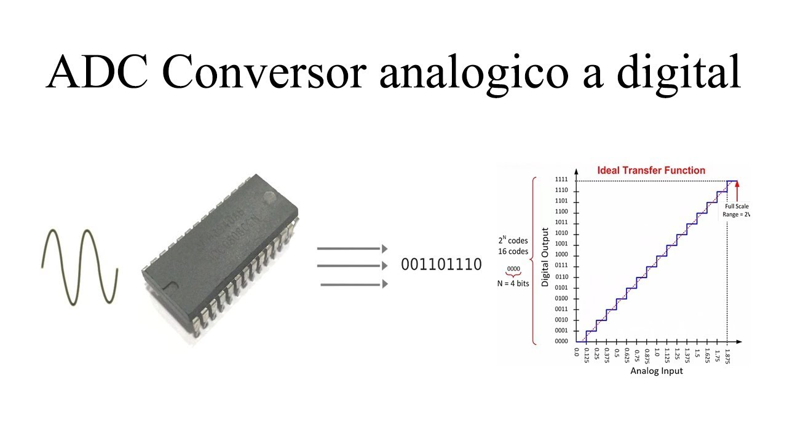
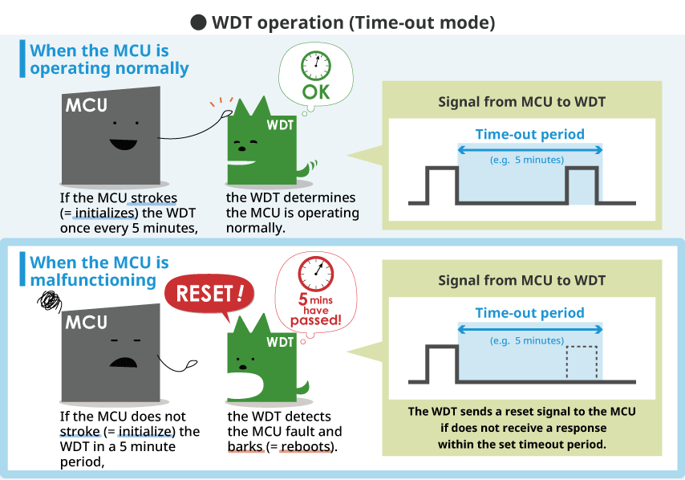
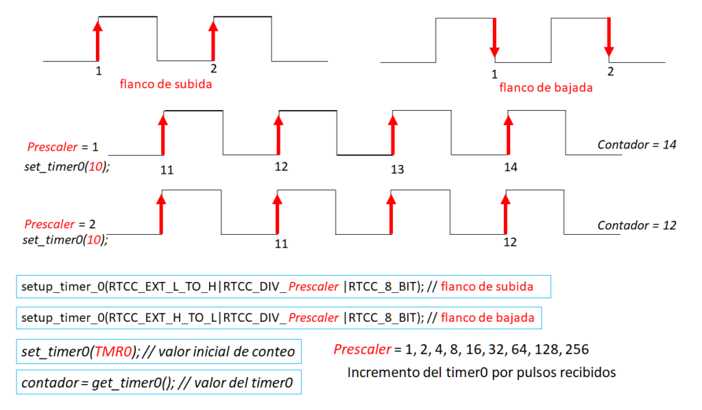

Microcontroladores
En el corazón de la electrónica moderna y los sistemas empotrados se encuentran los microcontroladores: pequeños ordenadores integrados en un solo circuito impreso que están diseñados para automatizar procesos y controlar dispositivos. Para comprender cómo funcionan a fondo, tomaremos como referencia clásica a la familia de microcontroladores PIC (Peripheral Interface Controller) de Microchip, ampliamente utilizados en la industria y la educación por su robustez y versatilidad.
Un microcontrolador es un circuito integrado programable capaz de ejecutar órdenes almacenadas en su memoria. A diferencia de un microprocesador convencional (como el de un ordenador), que requiere componentes externos como memoria RAM y almacenamiento para funcionar, el microcontrolador es un sistema en un solo chip (SoC - System on a Chip) que incluye todos los elementos necesarios para operar de manera autónoma en una tarea específica.
La arquitectura interna de un microcontrolador PIC se compone fundamentalmente de tres elementos principales que trabajan en conjunto:
- ▱
Unidad Central de Procesamiento (CPU): Es el "cerebro" encargado de interpretar las instrucciones del programa, realizar operaciones lógicas y aritméticas, y coordinar al resto de los componentes internos. - ▱
Memoria: - ◦
Memoria de Programa (Flash): Donde se almacena de forma permanente el código o las instrucciones escritas por el programador. No se borra aunque se apague el dispositivo. - ◦
Memoria de Datos (RAM): Utilizada para almacenar de manera temporal las variables y los datos dinámicos mientras el microcontrolador está funcionando. - ◦
Memoria EEPROM: Memoria de almacenamiento no volátil destinada a guardar información que debe conservarse aun cuando se interrumpa la alimentación eléctrica (como configuraciones de usuario). - ▱
Líneas de Entrada/Salida (Puertos E/S): Los pines físicos que permiten al microcontrolador interactuar con el mundo exterior, conectándose a sensores, motores, pantallas y otros periféricos. - ▱
Periféricos internos: Módulos especializados integrados en el silicio, tales como temporizadores (timers), convertidores analógico-digitales (ADC), y módulos de comunicación (UART, SPI, I2C).

La imagen muestra un diagrama en bloques del PIC16F84 de Microchip Technology con I/O y algunos periféricos. Introducido a principios de la década de 1990, realiza funciones básicas. Los MCUs de 8 bits actuales suelen integrar múltiples periféricos, lo que genera mayor complejidad de software para el desarrollador de aplicaciones.
El proceso de programar un microcontrolador PIC requiere transformar una idea lógica en señales eléctricas que su memoria pueda interpretar. Los pasos generales son:
- ⓵
Diseño del circuito: Se debe planificar la conexión de los componentes y los pines del microcontrolador. - ⓶
Desarrollo del código: Se redacta el programa utilizando lenguajes de programación como C (empleando entornos de desarrollo oficiales como MPLAB X IDE) o incluso en lenguaje ensamblador para un control milimétrico del hardware. - ⓷
Compilación: El entorno de desarrollo traduce el código legible por humanos a un archivo binario o hexadecimal (.hex), que contiene las instrucciones exactas en lenguaje de máquina. - ⓸
Carga del programa: Utilizando un dispositivo programador/depurador físico (como el PICkit 3 o PICkit 4) conectado al ordenador y a los pines específicos de programación del PIC (como ICSP: In-Circuit Serial Programming), se transfiere el archivo hexadecimal directamente a la memoria Flash del microcontrolador. Una vez finalizado este proceso, el PIC comenzará a ejecutar el programa de forma independiente de inmediato.

Los pines son las terminales físicas del circuito integrado que permiten al microcontrolador interactuar con el entorno exterior, conectar componentes de alimentación y transferir señales de control o datos. Tomando como referencia la distribución de 40 pines del PIC16F874A/877A, estos se organizan en los siguientes grupos principales:
- φ
Pines de Alimentación y Reset: - ◦
VDD y VSS: Terminales de alimentación positiva y tierra distribuidas en varios pines del chip (como los pines 11, 12, 31 y 32) para garantizar la estabilidad eléctrica. - ◦
MCLR/VPP: Pin 1, encargado de recibir el pulso de reinicio maestro (*Master Clear*) y el voltaje de programación.
- ◦
- φ
Puertos de Entrada/Salida Digital y Analógica (Puertos A, B, C, D y E): - ◦
Puerto A (RA0–RA5): Pines 2 a 7, con funciones multiplexadas que incluyen canales analógicos del conversor ADC (AN0–AN4), voltajes de referencia y temporizadores. - ◦
Puerto B (RB0–RB7): Pines 33 a 40, destacados por incluir la interrupción externa en RB0 y las líneas de programación serial en circuito ICSP (PGC, PGD, PGM). - ◦
Puerto C (RC0–RC7): Pines 15 a 18 y 23 a 26, dedicados a la comunicación serial (UART, SPI, I2C) y módulos de captura/comparación/PWM. - ◦
Puerto D (RD0–RD7): Pines 19 a 22 y 27 a 30, configurables como E/S digitales de propósito general o como bus de datos para una interfaz paralela esclava (PSP). - ◦
Puerto E (RE0–RE2): Pines 8 a 10, que completan los canales analógicos (AN5–AN7) y proveen señales de control de lectura/escritura externa.
- ◦
El oscilador es el sistema encargado de generar los pulsos de reloj que marcan el ritmo y la velocidad a la que el microcontrolador ejecuta cada una de las instrucciones de su programa. En la estructura del PIC, este sistema se conecta directamente a los pines físicos externos

Los registros son espacios de almacenamiento de alta velocidad ubicados dentro de la memoria de datos (RAM) del microcontrolador. Funcionan como celdas de memoria especializadas donde se configuran los periféricos, se controlan los estados de los puertos de E/S y se gestionan las operaciones internas del sistema. Entre los registros esenciales del PIC destacan:
- φ
Registros de los Puertos (PORTA, PORTB, etc.): Almacenan el estado lógico actual (alto o bajo) presente en los pines físicos de los puertos. - φ
Registros de Dirección de Datos (TRISA, TRISB, etc.): Definen si un pin específico funciona como entrada (configurado en 1) o como salida (configurado en 0). - φ
Registro STATUS (03h / 83h): Contiene las banderas o indicadores de estado de la ALU, como el bit de cero, de arrastre (*carry*) y los bits de selección de bancos de memoria. - φ
Registros de Control y Configuración: Tales comoINTCON (para la gestión de interrupciones),TMR0 (para temporizaciones), y los registros asociados al manejo de la memoria EEPROM (EEDATA, EEADR, EECON1, EECON2 ).

El registro W, o registro de trabajo (*Working Register*), es un acumulador temporal fundamental dentro de la arquitectura del microcontrolador. A diferencia de otros registros, el registro W no posee una dirección fija en el mapa de memoria RAM para acceso directo común. Es el destino u origen predeterminado para la gran mayoría de las operaciones aritméticas y lógicas ejecutadas por la Unidad Aritmética Lógica (ALU), sirviendo como un puente rápido para mover datos entre los diferentes registros de la memoria y procesar información de manera eficiente.
El Contador de Programa es un registro especial de 13 bits encargado de almacenar la dirección de memoria exacta de la siguiente instrucción que el microcontrolador debe buscar y ejecutar. Tras leer una instrucción, el contador se incrementa automáticamente de forma secuencial, salvo cuando ocurren saltos, llamadas a subrutinas o interrupciones, momento en el cual se actualiza con una nueva dirección para alterar el flujo de ejecución del programa. En la arquitectura PIC, se complementa con registros como

El conjunto de instrucciones de un microcontrolador PIC (específicamente en la gama media como el PIC16F874A/877A) se basa en una arquitectura
- ⍟
Formato y Longitud: Cada instrucción en la memoria de programa tiene una longitud fija de 14 bits, lo que permite contener tanto el código de operación como los operandos o registros involucrados en una sola palabra. - ⍟
Velocidad de Ejecución (Ciclos de Instrucción): La gran mayoría de las instrucciones se ejecutan en un solo ciclo de instrucción. Dado que la arquitectura interna divide cada ciclo de instrucción en cuatro periodos de reloj, la velocidad real de ejecución de una instrucción equivale a la frecuencia del oscilador dividida entre cuatro (4 ciclos de reloj por instrucción). Las únicas excepciones son las instrucciones de salto o bifurcación, las cuales toman dos ciclos en completarse. - ⍟
Ortogonalidad: Aunque el repertorio es reducido, las instrucciones están diseñadas para operar de manera flexible entre el registro de trabajo (W), los registros de la memoria de datos (RAM) y los pines de E/S, permitiendo realizar operaciones aritméticas, lógicas, de transferencia de datos y de control de flujo de forma sumamente eficiente.

Para escribir o enviar datos hacia el exterior a través de los pines de un puerto (por ejemplo, el Puerto B), es necesario seguir dos pasos fundamentales en la programación:
- ⌲
Configurar la dirección (Registro TRIS): Se debe configurar el registro de control correspondiente (comoTRISB) cargando un0en los bits que se desean como salida y un1en los que funcionarán como entrada. Por ejemplo, configurar todo el Puerto B como salida se logra cargando el valor0x00enTRISB. - ⌲
Escribir el dato (Registro PORT): Una vez configurado como salida, se asigna el valor deseado directamente al registro del puerto (comoPORTB). Esto establece un nivel lógico alto (5V) o bajo (0V) en los pines físicos correspondientes.
Los bucles de retardo son rutinas basadas en estructuras de repetición (como bucles for o while decrecientes) diseñadas para consumir ciclos de reloj intencionalmente. Dado que los microcontroladores ejecutan millones de instrucciones por segundo, estos retardos permiten pausar la ejecución del programa durante un tiempo determinado —por ejemplo, para mantener encendido un LED visiblemente antes de cambiar su estado— permitiendo al usuario percibir los cambios visuales o sincronizar la comunicación con dispositivos externos más lentos.
Ejemplo de programa
A continuación se muestra un ejemplo clásico y comentado de un programa básico en lenguaje C (para compiladores como XC8) que hace parpadear (*blinking*) un LED conectado al pin RB0 del microcontrolador:
Las subrutinas son bloques de código reutilizables que permiten modularizar un programa. En el lenguaje ensamblador de los microcontroladores PIC, una subrutina se invoca mediante la instrucción CALL, la cual guarda automáticamente la dirección de retorno en la pila (*stack*) y salta a la etiqueta especificada. Al finalizar las instrucciones de la subrutina, la instrucción RETURN recupera esa dirección de la pila para que el programa principal continúe exactamente en el punto donde se quedó.
Cómo leer los puertos
Para leer el estado lógico de los pines de un puerto externo (por ejemplo, leer botones o sensores conectados al Puerto B), se deben seguir los siguientes pasos operativos:
- ⌲
Configurar como entrada (Registro TRIS): Se debe cargar un1en el bit correspondiente del registro de dirección de datos (comoTRISB) para habilitar el pin como alta impedancia (entrada). - ⌲
Lectura del puerto (Registro PORT): Se ejecuta una instrucción de lectura directamente sobre el registro del puerto (comoPORTB), almacenando el valor obtenido en el registro de trabajo (W) o en un registro de propósito general para su posterior evaluación lógica.
Ejemplo en Ensamblador: Lectura de Puertos y Subrutinas
A continuación se presenta un programa completo escrito en lenguaje ensamblador puro y comentado, el cual configura pines, implementa una subrutina de lectura de puertos y gestiona el flujo del programa:
; =====================================================================
; Programa de Ejemplo: Lectura de Puerto B y llamada a Subrutina
; Microcontrolador: PIC16F874A / PIC16F877A
; =====================================================================
LIST P=16F877A ; Especifica el microcontrolador
#include <p16f877a.inc> ; Incluye las definiciones de registros
; Bits de configuración (Configuration Words)
__CONFIG _FOSC_XT & _WDTE_OFF & _PWRTE_ON & _BOREN_ON & _LVP_OFF
CBLOCK 0x20 ; Inicio de memoria RAM de propósito general
D1 ; Variable para el bucle de retardo
D2
ENDC
ORG 0x00 ; Vector de inicio / Reset
GOTO INICIO
ORG 0x04 ; Vector de interrupciones (no utilizado aquí)
RETFIE
INICIO:
; --- Configuración de Bancos y Puertos ---
BSF STATUS, RP0 ; Selecciona el Banco 1 (RP0 = 1)
MOVLW B'11111111' ; Configura todo el Puerto B como entrada (1s)
MOVWF TRISB
MOVLW B'00000000' ; Configura todo el Puerto A como salida (0s)
MOVWF TRISA
BCF STATUS, RP0 ; Regresa al Banco 0 (RP0 = 0)
BUCLE_PRINCIPAL:
CALL LEER_PUERTO ; Llama a la subrutina para leer el estado del Puerto B
MOVWF PORTA ; Mueve el valor leído del puerto B al Puerto A (refleja el estado)
GOTO BUCLE_PRINCIPAL
; =====================================================================
; Subrutina: LEER_PUERTO
; Lee el valor actual presente en el Puerto B y lo deja en W
; =====================================================================
LEER_PUERTO:
MOVF PORTB, W ; Lee el registro PORTB y almacena el resultado en W
RETURN ; Retorna al programa principal con el valor en W
END ; Fin del programa fuente
Código en Ensamblador: Lectura con Interpretación Lógica
Para hacer el programa más interesante que un simple reflejo de datos, vamos a implementar una lógica condicional. En este ejemplo, el microcontrolador leerá el estado del Puerto B (donde podemos suponer que hay interruptores o botones conectados) y evaluará si un bit específico está activo. Si el botón está presionado, activará una secuencia de salida especial en el Puerto A; de lo contrario, mantendrá un patrón alternativo.
La comunicación interna y directa con los pines de los puertos (como PORTA o PORTB) no es serial ni multiplexada, sino de tipo **paralelo** y basada en un bus de datos interno de 8 bits. Cada pin físico del puerto está conectado directamente a un flip-flop o buffer dentro del registro correspondiente, lo que permite que el microcontrolador lea o escriba el estado lógico de todos los pines del puerto de manera simultánea (en un solo ciclo de instrucción). Sin embargo, muchos de estos pines están multiplexados en su circuitería física externa para compartir múltiples funciones (por ejemplo, un pin puede funcionar como E/S digital, entrada analógica ADC o línea de comunicación serial USART/SPI, según se configure en los registros de control).
A continuación se presenta el código en ensamblador puro y comentado que lee el puerto, evalúa una condición lógica y ejecuta una acción diferenciada:
; =====================================================================
; Programa de Ejemplo: Lectura con Interpretación Lógica (Bifurcación)
; Microcontrolador: PIC16F874A / PIC16F877A
; =====================================================================
LIST P=16F877A ; Especifica el microcontrolador
#include <p16f877a.inc> ; Incluye las definiciones de registros
; Bits de configuración (Configuration Words)
__CONFIG _FOSC_XT & _WDTE_OFF & _PWRTE_ON & _BOREN_ON & _LVP_OFF
ORG 0x00 ; Vector de inicio / Reset
GOTO INICIO
ORG 0x04 ; Vector de interrupciones (no utilizado aquí)
RETFIE
INICIO:
; --- Configuración de Bancos y Puertos ---
BSF STATUS, RP0 ; Selecciona el Banco 1 (RP0 = 1)
MOVLW B'00000001' ; RB0 como entrada (botón), el resto como salida
MOVWF TRISB
MOVLW B'00000000' ; Todo el Puerto A como salida (LEDs de control)
MOVWF TRISA
BCF STATUS, RP0 ; Regresa al Banco 0 (RP0 = 0)
BUCLE_PRINCIPAL:
CALL LEER_PUERTO ; Llama a la subrutina para leer el estado del Puerto B
; --- Interpretación lógica de la lectura ---
BTFSC PORTB, 0 ; Prueba el bit 0 de PORTB. Si es 0 (botón no presionado), salta la siguiente instrucción.
GOTO ACCION_BOTON ; Si el bit es 1 (botón presionado), ejecuta esta sección.
; Caso por defecto (Botón NO presionado)
MOVLW B'00001111' ; Enciende los primeros 4 bits del Puerto A
MOVWF PORTA
GOTO BUCLE_PRINCIPAL
ACCION_BOTON:
; Caso alternativo (Botón PRESIONADO)
MOVLW B'11110000' ; Enciende los últimos 4 bits del Puerto A como señal de alerta
MOVWF PORTA
GOTO BUCLE_PRINCIPAL
; =====================================================================
; Subrutina: LEER_PUERTO
; Lee el valor actual presente en el Puerto B y lo deja en W
; =====================================================================
LEER_PUERTO:
MOVF PORTB, W ; Lee el registro PORTB y almacena el resultado en W
RETURN ; Retorna al programa principal con el valor en W
END ; Fin del programa fuente
◦
Los registros de control son celdas de memoria especializadas dentro de la arquitectura del microcontrolador cuya función principal no es almacenar datos temporales de usuario, sino configurar, habilitar o modificar el comportamiento de los distintos bloques de hardware y periféricos internos. En la familia PIC, estos registros están mapeados directamente en la memoria RAM (distribuidos entre los diferentes bancos de memoria) y permiten al programador definir cómo operarán los puertos, las interrupciones, los temporizadores y los sistemas de comunicación.
- ꕥ
Registros TRIS (TRISA, TRISB, etc.): Controlan la dirección de los pines de E/S distribuidos en 8 bits (desde el bit 7 hasta el bit 0). Al escribir un1configuran el pin correspondiente como entrada de alta impedancia, y al escribir un0lo configuran como salida de controlador activo. Cada bit del registro corresponde directamente a una línea física del puerto respectivo. - ꕥ
Registro STATUS (03h / 83h): Almacena las banderas de estado de la Unidad Aritmética Lógica (ALU) y los bits de selección de bancos:- ◦
Bit 7 (IRP): Bit de selección de banco para direccionamiento indirecto (permite acceder a los bancos de memoria RAM superiores). - ◦
Bit 6 (RP1): Bit 1 de selección de banco de memoria para direccionamiento directo. - ◦
Bit 5 (RP0): Bit 0 de selección de banco de memoria para direccionamiento directo (permite alternar entre el Banco 0, 1, 2 y 3 en conjunto con RP1). - ◦
Bit 4 (TO): Bit de tiempo fuera (*Time-out*), se pone a 0 si ocurre un reinicio por el temporizador Perro Guardián (Watchdog). - ◦
Bit 3 (PD): Bit de bajada de potencia (*Power-down*), se pone a 0 si el microcontrolador entra en modo de bajo consumo (Sleep). - ◦
Bit 2 (Z): Bit de cero (*Zero*), se establece en 1 si el resultado de una operación aritmética o lógica ejecutada por la ALU es igual a cero. - ◦
Bit 1 (DC): Bit de acarreo/préstamo dígito (*Digit Carry/Borrow*), indica si hubo un desbordamiento o subdesbordamiento en el nibble inferior (bit 4) durante operaciones de adición o sustracción. - ◦
Bit 0 (C): Bit de acarreo/préstamo (*Carry/Borrow*), indica si hubo un desbordamiento o subdesbordamiento en el bit más significativo (bit 7) durante operaciones aritméticas.
- ◦
- ꕥ
Registro INTCON (0Bh / 8Bh): Administra las fuentes de interrupción del sistema a nivel de bits individuales:- ◦
Bit 7 (GIE): Habilitador global de interrupciones (1 = Permite todas las interrupciones enmascaradas, 0 = Desactiva todas las interrupciones de forma global). - ◦
Bit 6 (PEIE): Habilitador de interrupciones de periféricos (1 = Habilita las interrupciones periféricas, 0 = Las deshabilita). - ◦
Bit 5 (TMR0IE): Habilitador de interrupción por desbordamiento del Temporizador 0 (1 = Habilitado, 0 = Deshabilitado). - ◦
Bit 4 (INTE): Habilitador de interrupción externa en el pin RB0/INT (1 = Habilitado, 0 = Deshabilitado). - ◦
Bit 3 (RBIE): Habilitador de interrupción por cambio de estado en los pines del Puerto B de la parte alta (RB4 a RB7) (1 = Habilitado, 0 = Deshabilitado). - ◦
Bit 2 (TMR0IF): Bandera de desbordamiento del Temporizador 0 (se pone a 1 automáticamente cuando TMR0 desborda de FFh a 00h y debe borrarse por software). - ◦
Bit 1 (INTF): Bandera de interrupción externa en el pin RB0/INT (se pone a 1 al detectarse el flanco configurado en el pin y debe borrarse por software). - ◦
Bit 0 (RBIF): Bandera de cambio de estado en los pines RB4:RB7 del Puerto B (se pone a 1 cuando ocurre un cambio lógico en cualquiera de esos pines y debe borrarse por software).
- ◦
- ꕥ
Registros OPTION_REG (81h): Configura opciones globales del hardware interno:- ◦
Bit 7 (RBPU): Habilitador de resistencias de pull-up internas del Puerto B (0 = Resistencias de pull-up habilitadas en los pines del Puerto B, 1 = Deshabilitadas). - ◦
Bit 6 (INTEDG): Selector de flanco de disparo para la interrupción externa en RB0 (1 = Disparo por flanco de subida, 0 = Disparo por flanco de bajada). - ◦
Bit 5 (T0CS): Selector de fuente de reloj para el Temporizador 0 (1 = Transición en el pin externo T0CKI, 0 = Ciclo de instrucción interno FOSC/4). - ◦
Bit 4 (T0SE): Selector de flanco para el Temporizador 0 en modo de transición externa (1 = Incrementa en flanco de bajada, 0 = Incrementa en flanco de subida). - ◦
Bit 3 (PSA): Asignación del prescaler (divisor de frecuencia) (1 = El prescaler se asigna al Perro Guardián WDT, 0 = El prescaler se asigna al Temporizador 0). - ◦
Bits 2-0 (PS2:PS0): Bits de selección de la tasa de división del prescaler, permitiendo ajustar la relación de división desde 1:2 hasta 1:256 para el temporizador o el WDT.
- ◦
- ꕥ
Registros de Control de EEPROM (EECON1 y EECON2): Gestionan los ciclos de lectura y escritura de la memoria no volátil:- ◦
EECON1 - Bit 7 (EEPGD): Selector de memoria de acceso (1 = Selecciona la memoria Flash de programa, 0 = Selecciona la memoria de datos EEPROM). - ◦
EECON1 - Bit 5 (WRERR): Bandera de error de escritura en la EEPROM (se activa automáticamente si el microcontrolador sufre un reinicio prematuro durante un ciclo de escritura activo). - ◦
EECON1 - Bit 4 (WREN): Habilitador de ciclos de escritura (1 = Permite operaciones de escritura en la EEPROM, 0 = Bloquea y protege contra escrituras accidentales). - ◦
EECON1 - Bit 3 (WR): Bit de control de inicio de escritura (al ponerlo en 1 inicia físicamente el proceso de programación en la EEPROM; el hardware lo borra automáticamente al finalizar). - ◦
EECON1 - Bit 2 (RD): Bit de control de inicio de lectura (al ponerlo en 1 inicia una operación de lectura instantánea de la posición indicada; el hardware lo limpia solo en el siguiente ciclo). - ◦
EECON2: No es un registro físico de almacenamiento de datos, sino una dirección de control de seguridad. Exige que se ejecute una secuencia estricta de escritura de códigos específicos (primero 55h y luego AAh) para desbloquear y autorizar la modificación segura de la memoria EEPROM.
- ◦

El Conversor Analógico-Digital (ADC) es un periférico interno fundamental que permite al microcontrolador transformar señales analógicas continuas del mundo físico (como voltajes provenientes de sensores de temperatura, luz, presión o potenciómetros) en valores numéricos digitales discretos que la CPU puede procesar. En la familia PIC16F874A/877A, este módulo cuenta con canales multiplexados de entrada analógica y registros de control específicos para gestionar su funcionamiento.
- ꕥ
Registro ADCON0 (Control 0 del ADC): Gestiona la configuración operativa principal, la selección del canal analógico activo y el estado de la conversión:- ◦
Bits 7-6 (ADCS1:ADCS0): Bits de selección del reloj de conversión ADC (determinan la velocidad del reloj interno en función de la frecuencia del oscilador FOSC). - ◦
Bits 5-3 (CHS2:CHS0): Bits de selección del canal analógico (permiten elegir cuál de las patillas de entrada analógica AN0 a AN7 será muestreada). - ◦
Bit 2 (GO/DONE): Bit de estado y control de inicio (se pone a 1 por software para iniciar una conversión analógico-digital; el hardware lo limpia automáticamente a 0 cuando la conversión finaliza). - ◦
Bit 0 (ADON): Bit de encendido del módulo ADC (1 = Enciende y habilita el módulo ADC, 0 = Apaga el módulo para ahorrar energía).
- ◦
- ꕥ
Registro ADCON1 (Control 1 del ADC): Configura el formato de justificación del resultado y la función de los pines como entradas analógicas o digitales, así como los voltajes de referencia:- ◦
Bit 7 (ADFM): Bit de formato de justificación del resultado (1 = Justificado a la derecha, 0 = Justificado a la izquierda en los registros de resultado). - ◦
Bits 3-0 (PCFG3:PCFG0): Bits de configuración del puerto analógico/digital (definen qué pines específicos funcionan como entradas analógicas y cuáles como E/S digitales de propósito general, además de seleccionar las fuentes de voltaje de referencia VREF+ y VREF-).
- ◦
- ꕥ
Registros de Resultado (ADRESH y ADRESL): Son los registros de almacenamiento donde se deposita el valor digital binario resultante de la conversión de 10 bits:- ◦
ADRESH (Byte Alto): Almacena los bits más significativos del resultado de la conversión (bits 9 a 2 si está justificado a la izquierda, o los bits 9 y 8 si está justificado a la derecha). - ◦
ADRESL (Byte Bajo): Almacena los bits menos significativos del resultado digital obtenido tras completar el muestreo.
- ◦
Ejemplo en Ensamblador: Lectura de Potenciómetro y Conversión de Rango
Para leer el valor de un potenciómetro conectado a un canal analógico (como AN0) y convertirlo a un rango de valores útil, se utiliza el módulo ADC del microcontrolador. Dado que el resultado nativo del ADC en la familia PIC16F874A/877A es de 10 bits (un valor de 0 a 1023), una forma eficiente y común de adaptarlo a un rango de 8 bits (de 0 a 255) en lenguaje ensamblador es configurar el registro ADCON1 con justificación a la izquierda y leer directamente el registro
A continuación se presenta un programa completo en ensamblador puro y comentado que realiza la lectura del potenciómetro y mapea su valor:
; =====================================================================
; Programa de Ejemplo: Lectura de Potenciómetro y Mapeo de Rango
; Microcontrolador: PIC16F874A / PIC16F877A
; =====================================================================
LIST P=16F877A ; Especifica el microcontrolador
#include <p16f877a.inc> ; Incluye las definiciones de registros
; Bits de configuración (Configuration Words)
__CONFIG _FOSC_XT & _WDTE_OFF & _PWRTE_ON & _BOREN_ON & _LVP_OFF
CBLOCK 0x20 ; Inicio de memoria RAM de propósito general
VALOR_ADC ; Variable para almacenar el valor escalado del potenciómetro
ENDC
ORG 0x00 ; Vector de inicio / Reset
GOTO INICIO
ORG 0x04 ; Vector de interrupciones (no utilizado aquí)
RETFIE
INICIO:
; --- Configuración de Puertos y ADC ---
BSF STATUS, RP0 ; Selecciona el Banco 1 (RP0 = 1)
MOVLW B'00000001' ; Configura RA0/AN0 como entrada analógica, el resto como salidas
MOVWF TRISA
MOVLW B'11110000' ; Configura Puerto B como salidas (para mostrar el valor escalado)
MOVWF TRISB
; Configuración de ADCON1 (Banco 1):
; ADFM = 0 (Justificado a la izquierda para usar ADRESH como valor de 0 a 255)
; PCFG3:PCFG0 = 1110 (AN0 como analógica, VDD y VSS como referencias)
MOVLW B'00001110'
MOVWF ADCON1
BCF STATUS, RP0 ; Regresa al Banco 0 (RP0 = 0)
; Configuración de ADCON0 (Banco 0):
; ADCS1:ADCS0 = 01 (Reloj de conversión FOSC/8)
; CHS2:CHS0 = 000 (Selecciona el canal AN0)
; ADON = 1 (Enciende el módulo ADC)
MOVLW B'01000001'
MOVWF ADCON0
BUCLE_PRINCIPAL:
CALL LEER_POTENCIOMETRO ; Llama a la subrutina de conversión ADC
; --- Interpretación y Mapeo del Rango ---
; El valor de 0 a 255 ya se encuentra en la variable VALOR_ADC (gracias a ADRESH).
; Aquí podemos evaluar rangos; por ejemplo, si supera la mitad de la escala (128):
MOVFW VALOR_ADC
MOVWF PORTB ; Refleja el valor en los LEDs del Puerto B (rango completo escalado)
GOTO BUCLE_PRINCIPAL
; =====================================================================
; Subrutina: LEER_POTENCIOMETRO
; Inicia la conversión ADC en AN0 y extrae el valor escalado (0-255)
; =====================================================================
LEER_POTENCIOMETRO:
; Pequeño retardo de adquisición (tiempo de muestreo del condensador interno)
NOP
NOP
BSF ADCON0, GO ; Inicia el proceso de conversión analógico-digital (pone GO/DONE a 1)
ESPERAR_CONVERSION:
BTFSC ADCON0, GO ; Comprueba si la conversión ha terminado (GO/DONE se pone a 0)
GOTO ESPERAR_CONVERSION ; Si sigue en 1, espera
; La conversión ha finalizado.
; Al estar justificado a la izquierda, leemos ADRESH (8 bits más significativos, rango 0-255)
MOVF ADRESH, W
MOVWF VALOR_ADC ; Guarda el valor escalado en la variable
RETURN ; Retorna al programa principal
END ; Fin del programa fuente

El Watchdog Timer (WDT) es un temporizador independiente basado en un oscilador RC interno de baja potencia que funciona de manera autónoma, sin depender del reloj principal del microcontrolador. Su función principal es actuar como un sistema de seguridad crítico: si el software del sistema entra en un bucle infinito o se bloquea por una falla imprevista, el WDT cuenta un tiempo predeterminado hasta desbordarse, generando automáticamente un reinicio físico del microcontrolador para recuperar el control operativo.
Para mantener el sistema en funcionamiento normal, el programa debe reiniciar periódicamente el temporizador mediante la instrucción en ensamblador CLRWDT antes de que se cumpla el tiempo límite.
- ꕥ
Funcionamiento y Configuración por Hardware: El WDT se habilita o deshabilita principalmente desde las palabras de configuración del microcontrolador (mediante los bits de fusible comoWDTE = ON/OFF). Su tiempo de desbordamiento nominal base (sin divisor de frecuencia) es de aproximadamente 18 milisegundos, el cual puede extenderse considerablemente utilizando un preescalador (prescaler) interno. - ꕥ
Relación con el Registro OPTION_REG: El divisor de frecuencia del WDT se configura a través de los bits del registroOPTION_REG:- ◦
Bit 3 (PSA): Asignación del prescaler (para que el divisor afecte al Watchdog Timer, el bit PSA debe configurarse en1). - ◦
Bits 2-0 (PS2:PS0): Bits de selección de la tasa de división del prescaler, permitiendo ampliar el tiempo de desbordamiento del WDT desde una relación de 1:1 (~18 ms) hasta un máximo de 1:128 (aproximadamente 2.3 segundos).
- ◦
- ꕥ
Relación con el Registro STATUS (Banderas de Reinicio): El microcontrolador dispone de bits de estado en el registroSTATUSpara identificar la causa de un reinicio:- ◦
Bit 4 (TO - Time-out bit): Indicador de tiempo fuera del Watchdog. Se pone automáticamente a0si ocurre un reinicio provocado por el desbordamiento del WDT, lo que permite al programa identificar que el sistema se recuperó de un bloqueo. - ◦
Bit 3 (PD - Power-down bit): Indicador de modo de suspensión, utilizado en conjunto con TO para diferenciar entre un reinicio por WDT, un reinicio por hardware o un despertar del modo de bajo consumo (*Sleep*).
- ◦

Los temporizadores o contadores internos son periféricos de hardware fundamentales en el microcontrolador que permiten medir el tiempo transcurrido, generar retrasos precisos sin consumir ciclos de CPU en bucles vacíos, contar eventos externos o producir señales moduladas (PWM). En la arquitectura PIC16F874A/877A, el módulo
- ꕥ
Registro TMR0 (Registro del Temporizador 0): Es el byte de conteo físico (de 8 bits). Se incrementa constantemente de forma automática en cada ciclo de instrucción (o pulso externo). Cuando su valor pasa deFFha00h, se desborda y activa una bandera de interrupción, lo que permite medir intervalos de tiempo exactos. - ꕥ
Registro OPTION_REG (Configuración del Timer0): Controla los parámetros operativos fundamentales del temporizador:- ◦
Bit 5 (T0CS): Selector de fuente de reloj (1 = Transición en el pin externo T0CKI, 0 = Ciclo de instrucción interno FOSC/4). - ◦
Bit 4 (T0SE): Selector de flanco para el modo externo (1 = Incrementa en flanco de bajada, 0 = Incrementa en flanco de subida). - ◦
Bit 3 (PSA): Asignación del prescaler (0 = El prescaler se asigna al Timer0, 1 = Se asigna al Watchdog Timer). - ◦
Bits 2-0 (PS2:PS0): Bits de selección de la tasa de división del prescaler (desde 1:2 hasta 1:256 para escalar la velocidad de conteo).
- ◦
- ꕥ
Registro INTCON (Gestión de Banderas del Timer0): Bit 5 (TMR0IE): Habilitador de interrupción por desbordamiento del Timer0.Bit 2 (TMR0IF): Bandera de desbordamiento (se pone a 1 automáticamente cuando el Timer0 pasa de FFh a 00h y debe limpiarse por software).
Ejemplo en Ensamblador: Temporizador para Parpadeo Preciso con Timer0
El siguiente programa implementa un retardo de tiempo basado puramente en el desbordamiento del Timer0, evitando el uso de bucles de retardo por software convencionales y permitiendo un control temporal exacto para hacer parpadear un LED en el Puerto B:
A continuación se presenta el código completo en ensamblador comentado:
; =====================================================================
; Programa de Ejemplo: Temporizador Timer0 para Retardo Preciso
; Microcontrolador: PIC16F874A / PIC16F877A
; =====================================================================
LIST P=16F877A ; Especifica el microcontrolador
__CONFIG _FOSC_XT & _WDTE_OFF & _PWRTE_ON & _BOREN_ON & _LVP_OFF
#include <p16f877a.inc>
CBLOCK 0x20
CONTADOR_CICLOS ; Variable auxiliar para contar desbordamientos
ENDC
ORG 0x00
GOTO INICIO
ORG 0x04
RETFIE
INICIO:
; --- Configuración de Puertos ---
BSF STATUS, RP0 ; Selecciona el Banco 1
CLRF TRISB ; Configura todo el Puerto B como salida (LEDs)
; Configuración de OPTION_REG (Banco 1):
; T0CS = 0 (Reloj interno FOSC/4)
; PSA = 0 (Prescaler asignado a Timer0)
; PS2:PS0 = 111 (Tasa de división de 1:256 para maximizar el tiempo)
MOVLW B'00000111'
MOVWF OPTION_REG
BCF STATUS, RP0 ; Regresa al Banco 0
CLRF PORTB ; Inicializa el Puerto B apagado
BUCLE_PRINCIPAL:
BSF PORTB, 0 ; Enciende el LED en RB0
CALL RETARDO_TIMER0 ; Llama a la rutina de retardo basada en Timer0
BCF PORTB, 0 ; Apaga el LED en RB0
CALL RETARDO_TIMER0 ; Llama nuevamente a la rutina de retardo
GOTO BUCLE_PRINCIPAL
; =====================================================================
; Subrutina: RETARDO_TIMER0
; Utiliza el desbordamiento del Timer0 para generar una pausa precisa
; =====================================================================
RETARDO_TIMER0:
MOVLW D'10' ; Carga el número de desbordamientos necesarios para completar la pausa
MOVWF CONTADOR_CICLOS
REINICIAR_TIMER:
MOVLW D'60' ; Precarga inicial en TMR0 para ajustar el tiempo de conteo
MOVWF TMR0
BCF INTCON, TMR0IF ; Limpia la bandera de desbordamiento del Timer0 (TMR0IF = 0)
ESPERAR_DESBORDAMIENTO:
BTFSS INTCON, TMR0IF ; Revisa si el Timer0 se desbordó (TMR0IF pasa a 1)
GOTO ESPERAR_DESBORDAMIENTO ; Si no ha desbordado, sigue esperando
; El Timer0 se desbordó una vez. Decrementamos el contador de ciclos acumulados.
DECFSZ CONTADOR_CICLOS, F
GOTO REINICIAR_TIMER ; Si faltan desbordamientos, repite
RETURN ; Retorna al programa principal al cumplirse el tiempo total
END

La Modulación por Ancho de Pulso (PWM, por sus siglas en inglés) es una técnica altamente eficiente que permite simular niveles de voltaje analógicos mediante una señal digital de onda cuadrada, variando el tiempo en que la señal permanece en estado alto (ciclo de trabajo o *duty cycle*) respecto al periodo total. En la familia PIC16F874A/877A, los módulos CCP (Capture/Compare/PWM) junto con el Timer2 permiten generar señales PWM de hardware de forma autónoma, ideales para controlar la velocidad de motores de corriente continua, la intensidad lumínica de LEDs o la posición de servomotores.
- ꕥ
Registro PR2 (Periodo del Timer2): Almacena el valor que define el periodo de la señal PWM. Determina la frecuencia fundamental con la que se repetirá el ciclo de la onda cuadrada en combinación con el preescalador de Timer2. - ꕥ
Registro T2CON (Control del Timer2): Gestiona la activación y la escala de tiempo del temporizador asociado al PWM:- ◦
Bits 6-3 (TOUTPS3:TOUTPS0): Bits de postescalador de Timer2 (generalmente se configuran en 0 para PWM estándar). - ◦
Bit 2 (TMR2ON): Bit de encendido del Timer2 (1 = Enciende el temporizador y habilita el funcionamiento del PWM, 0 = Apaga el temporizador). - ◦
Bits 1-0 (T2CKPS1:T2CKPS0): Bits de selección del preescalador de Timer2 (permiten dividir la frecuencia de entrada para ajustar la base de tiempo del PWM: 00 = 1:1, 01 = 1:4, 1X = 1:16).
- ◦
- ꕥ
Registro CCPR1L (Ciclo de Trabajo de 8 bits): Almacena los 8 bits más significativos del ciclo de trabajo (*Duty Cycle*). Modificar este valor permite cambiar dinámicamente el ancho del pulso en alto y, por ende, la potencia aplicada a la carga. - ꕥ
Registro CCP1CON (Control del Módulo CCP1): Configura el modo operativo del módulo CCP y almacena los bits menos significativos del ciclo de trabajo:- ◦
Bits 5-4 (DC1B1:DC1B0): Los 2 bits menos significativos del ciclo de trabajo de 10 bits, permitiendo una alta resolución en el ancho de pulso. - ◦
Bits 3-0 (CCP1M3:CCP1M0): Bits de selección de modo (al configurar el valor1100se habilita el modo PWM estándar con la salida en el pin RC2/CCP1).
- ◦
Ejemplo en Ensamblador: Generación de Señal PWM
El siguiente programa configura el módulo CCP1 y el Timer2 para generar una señal PWM fija en el pin RC2 del microcontrolador, estableciendo un ciclo de trabajo específico para regular la potencia de salida:
A continuación se presenta el código completo en ensamblador comentado:
; =====================================================================
; Programa de Ejemplo: Generación de PWM con CCP1 y Timer2
; Microcontrolador: PIC16F874A / PIC16F877A
; =====================================================================
LIST P=16F877A ; Especifica el microcontrolador
__CONFIG _FOSC_XT & _WDTE_OFF & _PWRTE_ON & _BOREN_ON & _LVP_OFF
#include <p16f877a.inc>
ORG 0x00
GOTO INICIO
ORG 0x04
RETFIE
INICIO:
; --- Configuración de Puertos y Periféricos ---
BSF STATUS, RP0 ; Selecciona el Banco 1 (RP0 = 1)
BCF TRISC, 2 ; Configura el pin RC2/CCP1 como salida (necesario para PWM)
; Configuración de la Frecuencia PWM mediante PR2 (Banco 1)
; Se carga un valor para definir el periodo base de la señal
MOVLW D'124'
MOVWF PR2
BCF STATUS, RP0 ; Regresa al Banco 0 (RP0 = 0)
; --- Configuración del Ciclo de Trabajo (Duty Cycle) ---
; Cargamos un valor intermedio en CCPR1L (ej. 62 para 50% de ciclo de trabajo aproximado)
MOVLW D'62'
MOVWF CCPR1L
; --- Configuración de CCP1CON (Banco 0) ---
; CCP1M3:CCP1M0 = 1100 (Modo PWM activado)
; DC1B1:DC1B0 = 00 (Bits de menor peso del ciclo de trabajo)
MOVLW B'00001100'
MOVWF CCP1CON
; --- Configuración de Timer2 (T2CON - Banco 0) ---
; TMR2ON = 1 (Enciende el Timer2)
; T2CKPS1:T2CKPS0 = 01 (Preescalador de 1:4)
MOVLW B'00000101'
MOVWF T2CON
BUCLE_PRINCIPAL:
; El hardware del módulo CCP1 genera la señal PWM de manera autónoma en el pin RC2.
; El bucle principal puede dedicarse a otras tareas o actualizar el valor de CCPR1L
; si se desea modificar dinámicamente la velocidad o intensidad de la carga conectada.
GOTO BUCLE_PRINCIPAL
END
Ejemplo en Ensamblador: Control de PWM
Tienes toda la razón, el objetivo correcto es integrar el conversor analógico-digital con el módulo PWM. El siguiente programa lee continuamente el valor de un potenciómetro conectado a AN0 y utiliza ese resultado de 8 bits (gracias a la justificación a la izquierda en ADRESH) para actualizar de forma dinámica el ciclo de trabajo (Duty Cycle) del registro CCPR1L. De este modo, al girar el potenciómetro se variará directamente el ancho del pulso de la señal PWM en el pin RC2, regulando de forma suave y proporcional la intensidad lumínica de un LED.
A continuación se presenta el código completo en ensamblador comentado:
; =====================================================================
; Programa de Ejemplo: Control de PWM mediante Potenciómetro
; Microcontrolador: PIC16F874A / PIC16F877A
; =====================================================================
LIST P=16F877A ; Especifica el microcontrolador
__CONFIG _FOSC_XT & _WDTE_OFF & _PWRTE_ON & _BOREN_ON & _LVP_OFF
#include <p16f877a.inc>
ORG 0x00
GOTO INICIO
ORG 0x04
RETFIE
INICIO:
; --- Configuración de Puertos y Periféricos ---
BSF STATUS, RP0 ; Selecciona el Banco 1 (RP0 = 1)
MOVLW B'00000001' ; Configura RA0/AN0 como entrada analógica (potenciómetro)
MOVWF TRISA
BCF TRISC, 2 ; Configura el pin RC2/CCP1 como salida (salida PWM para el LED)
; Configuración de la Frecuencia PWM mediante PR2 (Banco 1)
; Se carga FFh (255) para un periodo completo de resolución de 8 bits
MOVLW D'255'
MOVWF PR2
; Configuración de ADCON1 (Banco 1)
; ADFM = 0 (Justificado a la izquierda para usar ADRESH directamente de 0 a 255)
; PCFG3:PCFG0 = 1110 (AN0 como analógica, VDD y VSS como referencias)
MOVLW B'00001110'
MOVWF ADCON1
BCF STATUS, RP0 ; Regresa al Banco 0 (RP0 = 0)
; --- Configuración de ADCON0 (Banco 0) ---
; ADCS1:ADCS0 = 01 (Reloj FOSC/8)
; CHS2:CHS0 = 000 (Selecciona canal AN0)
; ADON = 1 (Enciende el conversor ADC)
MOVLW B'01000001'
MOVWF ADCON0
; --- Configuración Inicial del Módulo PWM (CCP1 y Timer2) ---
; CCP1M3:CCP1M0 = 1100 (Modo PWM activado)
MOVLW B'00001100'
MOVWF CCP1CON
; TMR2ON = 1 (Enciende el Timer2), Preescalador 1:4 (T2CKPS = 01)
MOVLW B'00000101'
MOVWF T2CON
BUCLE_PRINCIPAL:
; --- Iniciar Conversión Analógica-Digital ---
NOP ; Pequeño retardo de adquisición
NOP
BSF ADCON0, GO ; Pone el bit GO/DONE en 1 para iniciar la conversión
ESPERAR_CONVERSION:
BTFSC ADCON0, GO ; Revisa si terminó la conversión (GO/DONE se pone a 0)
GOTO ESPERAR_CONVERSION ; Si sigue en 1, espera
; --- Actualizar el Ciclo de Trabajo del PWM ---
; Lee ADRESH (rango de 0 a 255) y cárgalo en CCPR1L
MOVF ADRESH, W
MOVWF CCPR1L ; Modifica dinámicamente el ancho de pulso según el potenciómetro
GOTO BUCLE_PRINCIPAL ; Repite el ciclo continuamente
END
La comunicación serial mediante el módulo
- ꕥ
Registro TXSTA (Control de Transmisión): - ◦
Bit 6 (TXEN): Habilitador de transmisión (1 = Habilita el transmisor USART, 0 = Deshabilita la transmisión). - ◦
Bit 5 (SYNC): Selector de modo de sincronización (1 = Modo síncrono, 0 = Modo asíncrono serial estándar). - ◦
Bit 2 (BRGH): Selector de alta velocidad de baudios en modo asíncrono (1 = Alta velocidad, 0 = Baja velocidad).
- ◦
- ꕥ
Registro RCSTA (Control de Recepción): - ◦
Bit 7 (SPEN): Habilitador del puerto serial (1 = Enciende y configura los pines RC6/TX y RC7/RX como puerto serial, 0 = Deshabilita el módulo). - ◦
Bit 4 (CREN): Habilitador de recepción continua (1 = Habilita el receptor asíncrono continuo, 0 = Deshabilita la recepción).
- ◦
- ꕥ
Registro SPBRG (Generador de Baudios): Almacena el valor numérico de 8 bits que determina la velocidad de transferencia o tasa de baudios (Baud Rate) en comunicación asíncrona en función de la frecuencia del oscilador. - ꕥ
Registros de Datos (TXREG y RCREG): - ◦
TXREG (Registro de Transmisión): Almacena el byte que se va a transmitir de forma serial al exterior. - ◦
RCREG (Registro de Recepción): Almacena el byte recibido de manera serial desde el exterior.
- ◦
Ejemplo en Ensamblador: Código Transmisor USART
El siguiente programa configura el módulo USART en modo asíncrono para transmitir continuamente un carácter o dato hacia un dispositivo receptor externo:
; =====================================================================
; Programa Transmisor USART en Ensamblador
; Microcontrolador: PIC16F874A / PIC16F877A
; =====================================================================
LIST P=16F877A
__CONFIG _FOSC_XT & _WDTE_OFF & _PWRTE_ON & _BOREN_ON & _LVP_OFF
#include <p16f877a.inc>
ORG 0x00
GOTO INICIO
INICIO:
BSF STATUS, RP0 ; Banco 1
; Configuración de Velocidad de Baudios (SPBRG) para 9600 baudios con FOSC = 4MHz (BRGH = 1)
MOVLW D'25'
MOVWF SPBRG
; Configuración de TXSTA (Banco 1)
; BRGH = 1 (Alta velocidad), SYNC = 0 (Asíncrono), TXEN = 1 (Habilita transmisión)
MOVLW B'00100100'
MOVWF TXSTA
BCF STATUS, RP0 ; Banco 0
; Configuración de RCSTA (Banco 0)
; SPEN = 1 (Habilita puerto serial)
MOVLW B'10000000'
MOVWF RCSTA
BUCLE_TX:
MOVLW 'A' ; Letra 'A' a transmitir
CALL ENVIAR_DATO
GOTO BUCLE_TX
ENVIAR_DATO:
MOVWF TXREG ; Carga el dato en el registro de transmisión
ESPERAR_TX:
BTFSS PIR1, TXIF ; Comprueba si el búfer de transmisión está vacío
GOTO ESPERAR_TX ; Si sigue transmitiendo, espera
RETURN
END
Ejemplo en Ensamblador: Código Receptor USART
El siguiente programa configura el módulo USART para recibir datos de forma serial y reflejarlos inmediatamente en los LEDs del Puerto B:
; =====================================================================
; Programa Receptor USART en Ensamblador
; Microcontrolador: PIC16F874A / PIC16F877A
; =====================================================================
LIST P=16F877A
__CONFIG _FOSC_XT & _WDTE_OFF & _PWRTE_ON & _BOREN_ON & _LVP_OFF
#include <p16f877a.inc>
ORG 0x00
GOTO INICIO
INICIO:
BSF STATUS, RP0 ; Banco 1
CLRF TRISB ; Puerto B como salidas (para mostrar el dato recibido)
; Configuración de Velocidad de Baudios (SPBRG) para 9600 baudios con FOSC = 4MHz
MOVLW D'25'
MOVWF SPBRG
; Configuración de TXSTA (Banco 1) -> BRGH = 1
MOVLW B'00100100'
MOVWF TXSTA
BCF STATUS, RP0 ; Banco 0
; Configuración de RCSTA (Banco 0)
; SPEN = 1 (Habilita puerto serial), CREN = 1 (Habilita recepción continua)
MOVLW B'10010000'
MOVWF RCSTA
BUCLE_RX:
BTFSS PIR1, RCIF ; Comprueba si hay un dato recibido disponible en el búfer
GOTO BUCLE_RX ; Si no hay dato, espera
MOVF RCREG, W ; Lee el dato recibido desde el registro RCREG y guárdalo en W
MOVWF PORTB ; Muestra el byte recibido en los LEDs del Puerto B
GOTO BUCLE_RX ; Repite el proceso
END
Las interrupciones son mecanismos de hardware que permiten detener temporalmente la ejecución del programa principal para atender de manera inmediata un evento prioritario (como el pulso de un sensor, el flanco de un botón o una señal externa). Una vez que la rutina de servicio de interrupción (ISR) finaliza, el microcontrolador del Arduino regresa automáticamente al punto exacto donde se encontraba el código principal sin perder información ni retrasar la lectura de eventos críticos.
En las placas Arduino basadas en microcontroladores AVR (como el Arduino Uno con el ATmega328P), esto se gestiona de forma sencilla mediante la función nativa attachInterrupt(), evitando la necesidad de configurar manualmente los registros internos.
Ejemplo en Arduino: Uso de Interrupciones Externas
El siguiente programa en C++ para Arduino configura una interrupción externa en el pin digital 2. Cada vez que se detecte un cambio de estado (por ejemplo, al presionar un botón conectado a dicho pin), se activará de inmediato la función de interrupción para alternar el estado de un LED:
// Definición de pines
const int pinBoton = 2; // El pin 2 en Arduino Uno soporta interrupciones externas (INT0)
const int pinLed = 13; // Pin del LED integrado en la placa
// Variable volátil para asegurar que se actualice correctamente dentro y fuera de la interrupción
volatile boolean estadoLed = LOW;
void setup() {
pinMode(pinLed, OUTPUT); // Configura el pin del LED como salida
pinMode(pinBoton, INPUT_PULLUP); // Configura el botón como entrada con resistencia pull-up interna
// Configura la interrupción externa
// digitalPinToInterrupt(pinBoton) traduce el pin 2 a la interrupción correspondiente (INT0)
// cambiarEstado es la función (ISR) que se ejecutará al activarse
// CHANGE indica que la interrupción se dispara ante cualquier cambio de flanco (subida o bajada)
attachInterrupt(digitalPinToInterrupt(pinBoton), cambiarEstado, CHANGE);
}
void loop() {
// El bucle principal puede ejecutar tareas pesadas o estar libre;
// el LED cambiará de estado de forma inmediata al ocurrir la interrupción en el pin 2.
digitalWrite(pinLed, estadoLed);
}
// =====================================================================
// Rutina de Servicio de Interrupción (ISR)
// Debe ser una función corta, rápida y sin parámetros ni retornos
// =====================================================================
void cambiarEstado() {
estadoLed = !estadoLed; // Invierte el estado lógico actual del LED
}
La transmisión inalámbrica permite a los microcontroladores comunicarse a distancia sin necesidad de cables físicos, abriendo las puertas al Internet de las Cosas (IoT), la domótica y el monitoreo remoto. Mediante el uso de ondas de radiofrecuencia (RF) y protocolos especializados, un microcontrolador puede enviar y recibir datos hacia ordenadores, teléfonos móviles u otros dispositivos embebidos.
- ✴
Fundamentos de Radiofrecuencia (RF): Es la tecnología base que utiliza ondas electromagnéticas para transportar información a través del espacio. Los sistemas operan típicamente en bandas de frecuencia libres (como 433 MHz, 868 MHz o la banda global de 2.4 GHz), donde cada frecuencia requiere un diseño de antena adecuado para asegurar una buena propagación y minimizar las interferencias ambientales. - ✴
Técnicas de Modulación: Como las ondas portadoras de alta frecuencia por sí solas no pueden transmitir datos digitales directamente, se utilizan técnicas de modulación (como ASK, FSK, GFSK o técnicas de espectro ensanchado) para alterar propiedades de la onda —como su frecuencia, fase o amplitud— en función de los ceros y unos de la señal digital. - ✴
Bluetooth y Bluetooth Low Energy (BLE): Es un estándar de comunicación inalámbrica de corto alcance muy popular. Mientras que el Bluetooth clásico se utiliza para transmisión de datos bidireccionales continuos (como la emulación transparente de puerto serial mediante perfiles SPP), la variante BLE (Bluetooth Low Energy) está optimizada para aplicaciones de bajísimo consumo energético, permitiendo que dispositivos alimentados por pequeñas baterías transmitan telemetría o estados de sensores de manera intermitente durante largos períodos. - ✴
Arquitectura Maestro-Esclavo: En muchos módulos de comunicación inalámbrica (como los adaptadores Bluetooth tradicionales), la red opera bajo un esquema jerárquico: el dispositivoMaestro tiene la iniciativa de buscar, solicitar y establecer la conexión, mientras que el dispositivoEsclavo permanece a la espera de ser vinculado para sincronizar el intercambio de información. - ✴
Alternativas de Enlace por Radiofrecuencia: Dependiendo de los requerimientos del proyecto, se pueden emplear desde módulos transceptores digitales simples (como los nRF24L01 para comunicación directa de corto/mediano alcance por SPI) hasta tecnologías de largo alcance y baja potencia (como LoRa), diseñadas para superar grandes distancias con una mínima inversión energética.
Para que un microcontrolador pueda interactuar de manera útil con el mundo real, no basta con procesar código internamente; requiere de elementos periféricos que actúan como sus sentidos y sus extremidades. Los sensores capturan los fenómenos físicos y los traducen en señales eléctricas, mientras que los actuadores ejecutan las respuestas físicas ordenadas por el sistema de control.
- 𐍈
Los Sensores (Captura de Entorno): Son dispositivos transductores encargados de medir magnitudes físicas (como temperatura, humedad, luz, presencia, distancia o presión) y transformarlas en una señal eléctrica interpretable por el microcontrolador. Pueden ser de tipoanalógico (entregando un voltaje continuo proporcional a la variable, como un potenciómetro o un sensor LM35) o de tipodigital (entregando pulsos o tramas de datos mediante protocolos como I2C, SPI o un solo hilo, como los sensores DHT11 o ultrasonicos HC-SR04). - 𐍈
Los Actuadores (Acción y Potencia): Son componentes encargados de convertir las señales eléctricas de salida del microcontrolador en acciones físicas, mecánicas o lumínicas sobre el entorno. Incluyen desde elementos sencillos de indicación (como LEDs y zumbadores piezoeléctricos) hasta sistemas electromecánicos y de potencia más complejos como motores de corriente continua (DC), servomotores y motores paso a paso. - 𐍈
Elementos de Interfaz de Potencia (Relés y Transistores): Los pines de un microcontrolador estándar (como el PIC o un Arduino) están diseñados para entregar corrientes muy pequeñas (típicamente de 20 mA a 25 mA como máximo). Por esta razón, para controlar cargas de alta potencia o corriente alterna (como lámparas, electroválvulas o motores grandes) es indispensable utilizar etapas de aislamiento y conmutación mediante transistores MOSFET/BJT, optoacopladores o relés electromecánicos. - 𐍈
Componentes de Acondicionamiento y Protección: Circuitos auxiliares fundamentales para garantizar la estabilidad operativa del sistema. Esto incluyeresistencias de pull-up y pull-down para fijar estados lógicos seguros en los pines de entrada y evitar lecturas flotantes; condensadores de desacoplo colocados cerca de los pines de alimentación del microcontrolador para filtrar picos de ruido eléctrico; y diodos de rueda libre (flyback) en paralelo con cargas inductivas para disipar los voltajes inversos generados al apagar motores o relés.